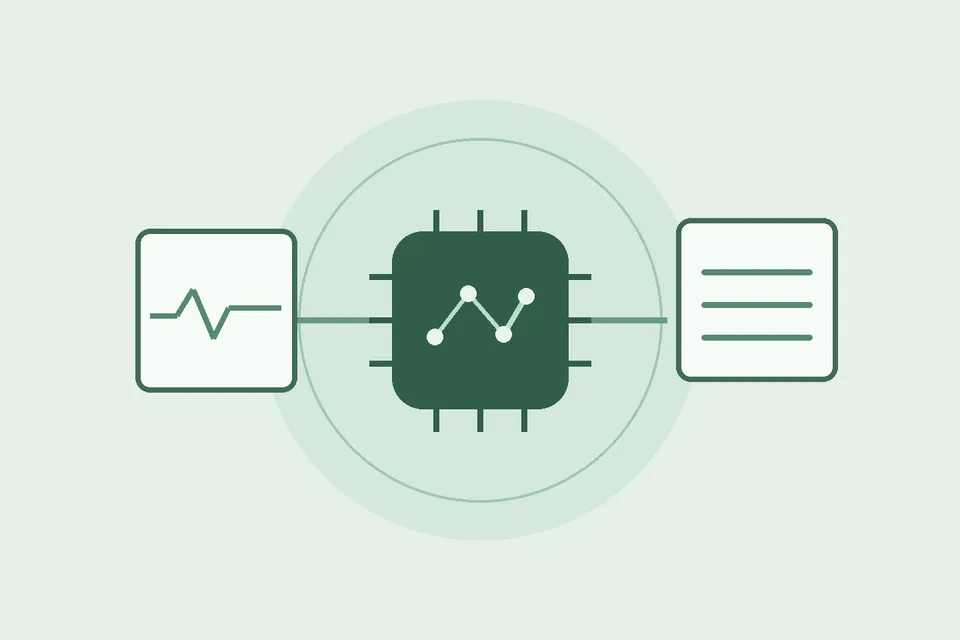

クリニックのAI導入、何から始める？ 電話・メール対応から電子カルテまで、5つの使い方
公開日：

「受付の電話を減らしたい」「診療後のカルテ入力を早く終えたい」「紹介状や院内文書の作成に時間がかかる」。同じ「クリニックのAI導入」でも、どの負担を減らしたいかによって、選ぶ仕組みは変わります。
まずは、院内で時間がかかっている仕事を一つ選び、AIに任せる部分と、人が確認する部分を決めるところから始めます。この記事では、電話、メール、文書作成、電子カルテ、診療内容の確認の5つに分けて、使い方を紹介します。
1．電話対応：定型の案内を任せ、判断が必要な電話は人につなぐ
診療時間、休診日、アクセス、予約方法など、回答が決まっている問い合わせは、自動音声で案内する候補です。たとえば、休診日の電話が多いなら、まず休診日と予約サイトの案内に絞ります。複雑な用件は受付へつなぐか、折り返しを受け付ける形にします。
一方、「この症状で今日受診したほうがいいか」「薬を飲み続けていいか」といった相談は、AIに判断させず、院内で決めた対応先へつなぎます。時間外で人につなげない場合の案内も、稼働前に決めておきます。
導入後は、電話件数だけでなく、同じ用件でかけ直す人が増えていないか、折り返しの負担が増えていないかも確認します。電話が減っても、患者さんが必要な案内にたどり着けなければ、設定を見直す必要があります。
2．メール対応：まずは返信の下書きから始める
予約方法や持ち物など、よくある質問には、院内で承認した案内文をもとにAIで返信案を作れます。最初は自動送信せず、受付担当者が宛先・日時・案内内容を確認してから送る運用が始めやすいです。
個人情報を扱う仕組みが整っていない段階では、受信メールをそのままAIに貼り付けず、「初診時の持ち物を案内する」といった一般的な条件だけでひな型を作ります。症状や検査結果について相談が届いた場合は、院内で決めた担当者へ回します。
3．文書作成：院内の手順書と、患者さんごとの文書を分ける
院内のお知らせ、会議の議題、新人研修のチェックリスト、受付の手順書は、個人情報なしでも下書きを作りやすい仕事です。たとえば受付手順書なら、今ある手順を箇条書きにし、「初めて担当する人が作業順に読める形に整える」と指示します。実際にその仕事を担当するスタッフが読み、手順の抜けや例外を補います。
紹介状や診療情報提供書は、患者さんごとの情報を扱うため、同じ手順では進められません。院内で利用を認めた環境で下書きを作り、医師が元の記録と照らして、病名、薬剤、検査結果、紹介目的などを確認してから確定します。
453人の実務者を対象にした一般的な業務文書の実験では、ChatGPTを使ったグループの作業時間は平均40％短縮しました。クリニックのメールや紹介状で同じ効果が出るかは、自院で確かめる必要があります。
試算例：定型メール1件が確認込みで5分から3分になれば、1日10件で20分、月20日なら約6時間40分の短縮です。
4．電子カルテ：診察内容を記録する負担を減らす
電子カルテでのAI活用には、診察時の会話からカルテ記載の下書きを作る方法や、これまでの経過を短く整理して、診察前に読み返しやすくする方法があります。
検討するときは、まず現在使っている電子カルテの提供元に、利用できる機能と連携方法を確認します。下書きを手作業で転記するのか、カルテ内で確認して確定できるのかで、現場の負担は変わります。診察音声を使う場合は、患者さんへの説明、録音データの保存先や保存期間、外部事業者によるデータの利用条件、閲覧できる人も確認します。厚生労働省の医療情報システムの安全管理に関するガイドラインと、個人情報保護委員会の生成AIに関する注意喚起が参考になります。
米国UCLAの外来医師238人を対象にした研究では、診察の会話からカルテの下書きを作るAIを使うと、あるツールでは通常の方法に比べてカルテ記載時間が9.5％短くなりました。一方、別のツールでは明確な短縮は確認されませんでした。自院で試すときは、下書きができる速さだけでなく、医師が内容を確認し、修正して確定するまでの時間を比べます。
試すときは、入力時間だけでなく、薬剤名や数値の誤り、話者の取り違え、記載漏れを直す時間まで見ます。下書きが速くできても、確認と修正に時間がかかれば、カルテ作業全体は短くなりません。
5．診療内容の確認：記録の見直しと、診断・治療の判断を分ける
「診療内容をAIで確認する」といっても、カルテに確認すべき項目が書かれているかを見直すことと、診断や治療方針が適切かを判断することでは、用途が違います。
記録の見直しなら、たとえば院内で決めた確認項目に沿って、再診時期や患者さんへの説明が記録に見当たらない箇所を、確認候補として示す使い方が考えられます。記録に書かれていないことと、実際に行っていないことは別なので、指摘の妥当性は担当者が元の記録で確認します。
診断や治療の支援を検討する場合は、その用途に合った製品か、想定される使い方や制約は何かを確認します。厚生労働省の通知では、AIによる診断・治療支援を利用しても、診断や治療を行い、最終判断を担うのは医師とされています。
自院で最初に試すなら、何を選ぶか
電話が混み合って受付業務が止まるなら、診療時間や予約方法の案内。同じ説明文を何度も書いているなら、メールやお知らせの下書き。診療後の残業がカルテ記載に集中しているなら、今の電子カルテで使える記録支援の確認から始めます。
最初の打ち合わせで決めるのは、「何を減らしたいか」「どこまでAIに任せるか」「誰が確認するか」の3点です。試した後は、確認・修正まで含めて時間が減ったか、スタッフや患者さんに別の負担が生まれていないかを見て、続けるか決めます。
自院ではどの業務から始めるとよいか整理したい方は、CTMへご相談ください。